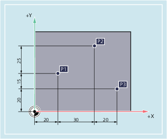

In Fertigungszeichnungen beziehen sich die Maße häufig nicht auf den Nullpunkt, sondern auf einen anderen Werkstückpunkt. Um solche Maße nicht umrechnen zu müssen, gibt es die Möglichkeit der Ketten- oder Inkrementalmaßangabe. Bei dieser Art der Maßangabe bezieht sich eine Positionsangabe auf den jeweils vorherigen Punkt.
Im Hinblick auf die Werkzeugbewegung bedeutet das:
Die Kettenmaßangabe beschreibt, um wie viel das Werkzeug verfahren soll.
Im Kettenmaß ergeben sich für die Punkte P2 bis P4 folgende Positionsangaben:
Position | Positionsangabe im Kettenmaß | Die Angabe bezieht sich auf: |
|---|---|---|
P2 | X15 Z-7,5 | P1 |
P3 | Z-10 | P2 |
P4 | X20 Z-10 | P3 |
| Hinweis |
Bei anstehendem DIAMOF oder DIAM90 wird der Sollweg bei Kettenmaßangabe (G91) als Radiusmaß programmiert. |
Die Positionsangaben für die Punkte P1 bis P3 im Kettenmaß lauten:
Im Kettenmaß ergeben sich für die Punkte P1 bis P3 folgende Positionsangaben:
Position | Positionsangabe im Kettenmaß | Die Angabe bezieht sich auf: |
|---|---|---|
P1 | X20 Y35 | Nullpunkt |
P2 | X30 Y20 | P1 |
P3 | X20 Y-35 | P2 |
Siehe auch:
Maßangaben